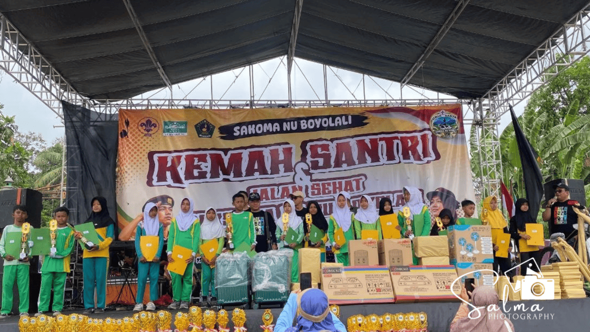

Kabar membanggakan kembali datang dari MI Salafiyatul Ma'muroh. Dua siswa terbaiknya berhasil mengukir prestasi dalam ajang Ajang Prestasi Ma'arif (APRESMA) II Kabupaten Boyolali. Kompetisi ini diselenggarakan oleh Lembaga Pendidikan Ma'arif NU Kabupaten Boyolali dalam rangka memeriahkan Harlah Ma'arif NU.
Penyerahan penghargaan dan piala bagi para pemenang diserahkan secara khidmat pada acara puncak peringatan Hari Santri Nasional Tahun 2026 yang berlangsung di Lapangan Karanggondang. Momen penyerahan ini disaksikan oleh seluruh tamu undangan serta jajaran pengurus LP Ma'arif NU dan ribuan santri yang hadir memadati lokasi acara.
Adapun siswa MI Salafiyatul Ma'muroh yang sukses membawa pulang penghargaan yaitu Revalia Marsha Anggraini yang meraih Juara Harapan 2 mata pelajaran IPAS. Prestasi membanggakan lainnya juga diraih oleh Nadhira Azka Thalita yang berhasil menyabet Juara Harapan 3 pada mata pelajaran Matematika.
Pihak MI Salafiyatul Ma'muroh menyampaikan rasa bangga dan apresiasi setinggi-tingginya atas kerja keras para siswa serta bimbingan dari dewan guru. Capaian ini diharapkan dapat menjadi motivasi bagi seluruh siswa-siswi lainnya untuk terus berprestasi, mengasah potensi, dan membawa nama baik madrasah di berbagai tingkatan ajang perlombaan.
← Kembali ke Beranda